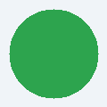

サンプルページ
この HTML は sample/html/thisis.html に置かれていて、
CSS・JS・画像を相対パス(../css/, ../js/, ../img/)で参照しています。

0 回
スタイルが効いてカードに影が付き、ボタンでカウントが増えれば、CSS と JS の読み込みは成功です。
この HTML は sample/html/thisis.html に置かれていて、
CSS・JS・画像を相対パス(../css/, ../js/, ../img/)で参照しています。

0 回
スタイルが効いてカードに影が付き、ボタンでカウントが増えれば、CSS と JS の読み込みは成功です。